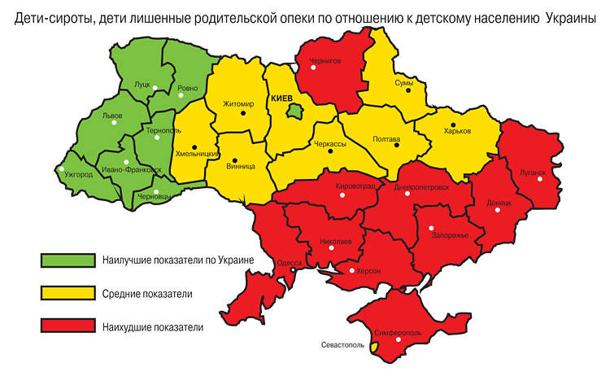

Діти, позбавлені батьківського піклування - це діти, які залишилися без піклування батьків у зв'язку з позбавленням їх батьківських прав, відібранням у батьків без позбавлення батьківських прав, визнанням батьків безвісно відсутніми або недієздатними, оголошенням їх померлими, відбуванням покарання в місцях позбавлення волі та перебуванням їх під вартою на час слідства, розшуком їх органами внутрішніх справ, пов'язаним з ухиленням від сплати аліментів та відсутністю відомостей про їх місцезнаходження, тривалою хворобою батьків, яка перешкоджає їм виконувати свої батьківські обов'язки, а також підкинуті діти, діти, батьки яких невідомі, діти, від яких відмовились батьки, та безпритульні діти
Статус дитини-сироти та дитини, позбавленої батьківського піклування, - визначене відповідно до законодавства становище дитини, яке надає їй право на повне державне забезпечення і отримання передбачених законодавством пільг та яке підтверджується комплектом документів, що засвідчують обставини, через які дитина не має батьківського піклування
Законодавство України про соціальний захист дітей-сиріт, дітей, позбавлених батьківського піклування, а також осіб з числа дітей-сиріт та дітей, позбавлених батьківського піклування, складається з Конституції України, цього Закону та інших законодавчих актів, які регулюють правовідносини, пов'язані з наданням матеріальної , соціальної і правової допомоги дітям-сиротам, дітям, позбавленим батьківського піклування, а також особам з числа дітей-сиріт та дітей, позбавлених батьківського піклування.
В Україні 8 млн. 80 тис. Дітей. З них - 98 тисяч дітей-сиріт і тих, хто позбавлений батьківської опіки. Лише третина цих дітей підлягає усиновленню. При цьому ризик стати сиротою на сході країни в три-чотири рази більше, ніж на заході. Про це говорила співголова правління Всеукраїнської громадської організації «Служба захисту дітей» Людмила Волинець, представляючи 10 червня на семінарі-практикумі «Сім'я для кожної дитини» карту сирітства України, розфарбовану за принципом показників ступеня небезпеки, де червоний означав найгіршу ситуацію, жовтий - середні показники , а зелений - кращі по країні. «Якщо в західних регіонах сиріт 0,5% від загальної кількості дітей, то в східних - 1,8-2%. Рекордсменом у цій сумній статистиці є Миколаївська область - 2,2% (4,5 тисячі дітей). Високі рівні смертності працездатного населення і злочинності в цьому регіоні, а також інші соціальні чинники дорослого суспільства призводять до сирітства дітей ». Несприятлива ситуація також у Дніпропетровській та Донецькій областях. Практично немає дітей-сиріт у Тернопільській, Чернівецькій та Львівській областях. Найбільше усиновлень відбувається в Києві і Севастополі, а також у Донецькій, Львівській і Херсонській областях. І хоча в останні роки в Україні спостерігалася тенденція до зменшення випадків відмови батьків від дитини (з 2005 по 2010 роки - на 41%. Згідно з даними Держкомстату, кількість відмовників зменшувалася обернено пропорційно зростанню числа новонароджених в країні і прямо пропорційно зростанню сум державної допомоги), викорінити соціальне сирітство повністю, на жаль, є малоймовірним. Зате ситуацію можна істотно поліпшити. Однак в цьому нинішній уряд України, схоже, зацікавлене значно менше, ніж попереднє. Чого-чого, а політичної волі та особистого контролю щодо долі дітей-сиріт та дітей, позбавлених батьківського піклування, президенту В.Ющенку було не позичати ...
В рамках семінару було представлено досвід Польщі в реформуванні системи сімейного влаштування дітей-сиріт. На початку 1990-х в цій країні почали проводити політику деінституціалізації дітей, тобто зменшувати кількість дитячих інтернатних установ шляхом впровадження нової системи соціальних послуг, орієнтованих на профілактику дитячого неблагополуччя, реінтеграцію дітей в біологічні сім'ї, пристрій в сімейні форми виховання, розвиток у дітей умінь і навичок самостійного життя або створення умов, наближених до сімейних.
Щорічно, як в Польщі, так і в Україні, покращити становище дітей-сиріт та тих, хто позбавлений батьківської опіки, намагаються за допомогою різних нормативно-правових актів та вдосконалення законодавства. Експерти і політики шукають нові шляхи вирішення проблеми. І в Польщі, і в Україні до сих пір зберігається практика позбавлення батьківських прав і життєустрою дітей в дитячі будинки та школи-інтернати. 25-30 тисяч маленьких поляків сьогодні містяться в таких установах (приблизно стільки ж маленьких українців - 28 тисяч, відповідно до торішніх заяв М.Азарова, знаходяться в будинках дитини та інтернатах нашої країни). Трьом тисячам з них ще немає п'яти років. Як відомо, Євросоюз, після вступу Польщі в 2004 році, висунув ряд вимог щодо приведення в порядок польського сімейного законодавства, під що були виділені кошти. У квітні цього року в Польщі було прийнято закон про підтримку сім'ї - як біологічної (для профілактики сирітства), так і приймальні. Деяким його нормам Україна, яка почала процес деінституалізації дітей-сиріт на десять років пізніше Польщі, може поки лише позаздрити. Зокрема, норми, що передбачає зниження кількості дітей, які містяться в інтернатних установах (не більше 30, а до 2020-го - не більше 14), появі сімейних помічників і координаторів альтернативного догляду, а також зміни правового статусу прийомних сімей. Крім іншого, польські батьки-вихователі зможуть тепер скористатися 30-денною відпусткою, під час якого про дітей дбатиме інша прийомна сім'я.